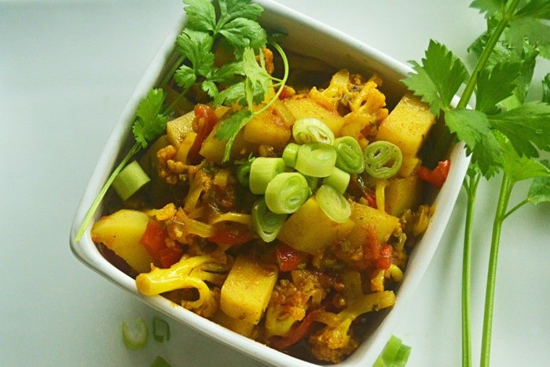

Butter Chicken

Butter chicken is mouth-watering, tender chicken, cooked in a spiced tomato sauce. It’s traditionally cooked in a tandoor (a cylindrical clay or metal oven)
Aloo Gobi
Aloo Gobi is a dry, vegan Indian dish, made with potatoes (aloo), cauliflower (gobi), and Indian spices. It has a warm, yellow-orange color, because it uses a staple in Indian dishes: turmeric
Naan (Flatbread)

If you’ve never experienced good naan bread, your life has been much less delicious than it could be.Naan is a leavened, oven-baked flatbread. You normally serve Naan with all meals.
Matar Paneer

Here’s another for the “Indian vegetarian dishes” category! Matar paneer comes from regions of northern India. It’s made up of a yummy tomato sauce over paneer (farmer’s cheese)